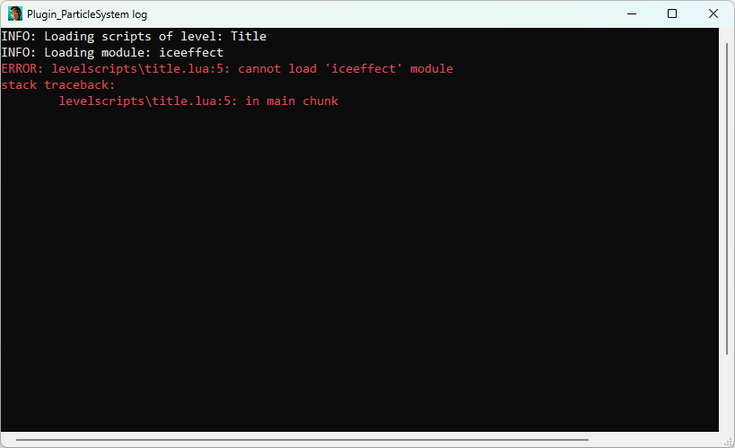

When writing code, there is always a high chance of making mistakes. Sometimes, this can be simply due to a lack of knowledge about the language or a feature, but not always. In reality, it happens to the best of us. It’s easy to overlook something when working with text on the screen. Often, we are tired after a long day, or we are in dire need of a break after focusing on a task for an extended period of time, and sooner or later we end up making a mistake. Not a big deal, either way!
Regardless of the reason for the mistake, programming languages like Lua are rather strict with what is and what isn’t accepted (even more strict than natural languages, like English, Spanish or Japanese), leaving little room for leniency. Whether it’s a problem with Lua syntax, or giving something the wrong type of value, or some other unexpected occurence in code, the plugin will complain about it in the form of an error message, letting the coder know what went wrong, in which Lua file and in which line it happened. Where do we encounter this special route of communication, though? We have not seen such error messages as of yet. Well, that is because they are sent to the plugin’s logging system, which is not enabled by default and must be enabled manually as a main plugin setting (MPS) flag for the Particle System plugin.
In this chapter, we will learn about the plugin’s logger and how to enable it. We’ll discover the different types of log messages and their meanings. We’ll get to know the error handling system and understand how to decipher the various error messages the plugin can give us. Finally, we’ll learn how to use the print() function to help with narrowing down silent bugs in the code. Although this chapter may be more of a dry read compared to the exciting previous chapter, learning about these very useful functionalities of the plugin will be a tremendous help, especially once we start tackling update functions in Chapter 3 and other more complex features further on.
The logger is an indispensable tool to have once you start to experiment more with the Particle System plugin and its scripting on your own. It not only reports any warnings or errors of things going wrong in your Lua code, but can give other useful infos about the internal processes going on in the plugin. Last but not least, it provides a reliable way to debug your modules and verify if your code works as intended.
The logger is built into Plugin_ParticleSystem.dll and can display 4 categories of log messages:
Message Type
Use and Meaning
INFO
Logs more detailed information about plugin-side operations, e.g. that a specific level script or module was loaded.
DEBUG
Logs debug output from the print() function (explained further in this chapter).
WARN
Logs warnings – not quite errors yet, but alerts of some improper input (e.g. value not in range), that the plugin can rectify by itself. However, relying on the plugin may hamper performance and it’s recommended to fix these warnings in final code whenever possible.
ERROR
Logs errors – alerts of something going terribly wrong, e.g. improper Lua syntax, assigning the incorrect type value to a field, missing a necessary function argument. These errors cause the Lua environment to abort executing the script code and they must be fixed to resume normal operation.
The INFO messages are only for providing extra context and can be safely ignored for the most part. In fact, there is a setting to filter them out if they prove distracting, which will be described further down this chapter. DEBUG messages arise due to user activity, coming from the use of the print() debugging function, which we will also cover later. The main group of messages relevant to coders are WARN and ERROR. With these message types, the plugin gives explicit indications of something not going right with a module or level script, hence they should be paid attention to. Given that these messages can be rather cryptic if you don’t know how to read them, this chapter also holds a section dedicated to interpreting examples of these messages and what actions you should carry out, in order to correct the module or level script code.
Modes of operation
The logger is disabled by default, but can be manually enabled in one of two modes of operation:
Console mode
File-dump mode
Let’s take a look at the console mode first, then we’ll examine the file-dump mode.
Console mode
The Console mode of the logger makes the game open a secondary window during boot, hosting an output console which displays the log messages from the plugin:
Various log messages are displayed in the console window in real-time, while the game is running. This can give you real-time feedback as to what is going on, and allows to track down when a specific log entry or error occurs.
In console mode, the log messages are color-coded with the following scheme:
INFO (white)
DEBUG (green)
WARN (yellow)
ERROR (red)
When enabling the console log mode, it is strongly recommended to also switch on windowed mode in the configuration settings of the game (the config window is displayed by holding CTRL before the game launches), or at the very least, use the Soft Full Screen setting. I’m aware it’s annoying to switch between different config settings during building, however in the course of testing the plugin across different PCs, there were hangs, crashes or otherwise odd behavior, when the console window was enabled and the game remained in proper fullscreen mode. You can of course return to the normal fullscreen setting once you no longer use the console logger.
File-dump mode
The File-dump mode works differently. Instead of logging the messages to a separate console window, it dumps the logs to a newly generated text file each time the game is booted. This file is named with the general scheme:
Plugin_ParticleSystem_YYYYMMDD_HHMMSS_log.txt
Where YYYYMMDD stands for the current date, and HHMMSS stands for the current system time on the PC, registered when the game is booted. These log files become available only after the game is closed and can be found in the working directory, where the Plugin_ParticleSystem.dll is present, alongside tomb4.exe. Though file dump logs do not allow to investigate the plugin behavior in real time, they are a more durable form of registering the plugin activity, which can later be examined at any time, or sent over to someone else (e.g. the plugin devs, in case of a suspected plugin bug). These text file logs are preferable to screenshots from the log console in such cases, as they give direct access to the text of each log message in chronological order. Here is a snippet showing example contents of a log text file:
INFO: Loading scripts of level: Playable Tutorial Level
INFO: Loading module: dust
WARN: modulescripts\dust.lua:55: -1 is less than the minimum of 0, clamping to minimum
stack traceback:
modulescripts\dust.lua:55: in main chunk
[C]: in global 'require'
levelscripts\tut1.lua:107: in main chunk
DEBUG: Test string after loading module 'dust'
INFO: Loading module: burn
ERROR: levelscripts\karnak.lua:8: attempt to access inexistent field 'damage'
stack traceback:
[C]: in metamethod 'newindex'
levelscripts\karnak.lua:8: in main chunk
ERROR: cannot load 'temple' level script
stack traceback:
ERROR: modulescripts\burn.lua:95: Vector3f expected
stack traceback:
[C]: in global 'soundEffect'
modulescripts\burn.lua:95: in function <modulescripts\burn.lua:74>
File-dump logs do not have color-coding as in the console (since they are dumped to a plain-text file), but still retain appropriate tags in the first line, which inform of the category of the given message.
By default, the logger of the Particle System plugin is not enabled. You must enable it manually.
The logger is enabled with special MPS_ flag constants understood by the Particle System plugin. There are two such flags:
MPS_LOGGER_CONSOLE
MPS_LOGGER_FILE
As you might guess, the first enables the console mode of the logger, while the second enables the file-dump mode. These constants should be placed in the Plugin= command that gets added to script.txt in the [Options] section, when installing the plugin through TombIDE or NG Center. For example, the plugin command for Plugin_ParticleSystem could be:
Plugin= 1, Plugin_ParticleSystem, IGNORE
If you have other plugins installed, the ID (first number) for Plugin_ParticleSystem could be different, but it does not matter (and you shouldn’t change this number yourself, anyway). To enable the one of the logger modes, you add the desired MPS_ constant in place of the default IGNORE:
You can have only one logger mode active at once. You are not allowed to enable both, e.g. the following does not work: MPS_LOGGER_CONSOLE + MPS_LOGGER_FILE. Of course, for the chosen MPS_ flag to take effect, you must rebuild the script before booting the game.
Disabling the logger
Once you no longer want to use the logger, you can switch it off by restoring the plugin command in [Options] to its initial state, without any MPS_ flags:
Plugin= 1, Plugin_ParticleSystem, IGNORE
If you are also a level builder, preparing a TRLE release, you should always turn off the logger for the release version of the TRLE project, as it is a tool for coders and possibly builders. The players, on the other hand, should not (and likely do not want to) see it. The console is rather distracting and tends to make the game engine less stable, while the log files add unnecessary trash to the game folder.
As mentioned before, the plugin provides a total of 4 log message categories: INFO, DEBUG, WARN, ERROR. However, some categories of messages are more important than others. For instance, INFO mainly provides extra context of what the plugin was doing, before a warning or error occured. But you may decide to ignore this message category altogether and focus on just the WARN and ERROR messages. If you want to filter out which messages are allowed to appear in the logger, you can do so with a special API function, setLogLevel().
The setLogLevel() function accepts special LOG_ constants, which filter out certain categories of messages. Log message categories are ordered by importance rank, according to the table below (higher number means higher importance):
Message Type
Importance Rank
LOG_ constant
INFO
1
LOG_INFO
DEBUG
2
LOG_DEBUG
WARN
3
LOG_WARN
ERROR
4
LOG_ERROR
The way LOG_ constants work is that they permit categories of importance higher or equal to the message category they specify. E.g. LOG_INFO permits all message categories (1-4), LOG_WARN permits only messages of importance 3 or higher (3-4), while LOG_ERROR will only permit ERROR messages (4).
By default, when a game is newly booted, the message filtering level is set to LOG_INFO (i.e. no filtering). To set a different level, you call setLogLevel() with the appropriate LOG_ constant in Lua:
setLogLevel(LOG_DEBUG) -- sets the filtering to permit DEBUG, WARN and ERROR messages
Most often, you will set the log level at the topmost line of a level script. The log level setting is never changed as long as the game is booted, until you change it again, somewhere else. This means that log level settings persist across different levels and in the title menu, from since when they were last modified.
My personally recommended log level setting, if you do not care to receive INFO messages, is LOG_DEBUG. DEBUG messages are only generated due to print() function calls and do not occur otherwise. Meanwhile, WARN and ERROR messages are also permitted by this level, and these messages should not be dismissed, in my opinion. They give important alerts to issues or syntax problems with your Lua code, hence disabling them is not a good idea (you cannot even disable ERROR messages, since the underlying issue makes the Lua environment halt, indicating something that needs immediate addressing).
Because you have much freedom to do as you please in script files, there is also plenty of opportunities to make mistakes that Lua will not like. Not all of these mistakes are equal, though, as some are more severe than others. Whichever message category you receive, reading and comprehending the logger output is always the key first step in fixing them. The most important messages to pay attention to in the logger are WARN and ERROR messages. They signal that something is off in the Lua scripts, which needs to be checked and fixed by the coder. When the plugin sends one of these two messages categories to the logger, we say that it throws a message (e.g. throws a WARN, throws an ERROR).
These types of messages will usually (but not always!) specify the name of the .lua file (could be a level script or module script) in which the problem was encountered. It may also specify the particular line of the script file where the problem occurred (counting from the top – starting from line 1). However, the messages can be a bit confusing if you don’t know what you’re supposed to look for in the message. This section will teach you how you should interpret these messages and understand what the plugin is trying to tell you in the process.
There is a general structure to WARN and ERROR message types:
Here is a concrete example, an ERROR message that occured on line 8 of karnak.lua level script:
ERROR: levelscripts\karnak.lua:8: attempt to access inexistent field 'damage'
stack traceback:
[C]: in metamethod 'newindex'
levelscripts\karnak.lua:8: in main chunk
The [TAG], e.g. ERROR, tells the message category. The [filepath] describes in which file the issue was encountered, e.g. levelscripts\karnak.lua indicates this happened in the karnak.lua file in the levelscripts folder. After the colon comes the [line number], in this case line number 8 (the first line in a file is line 1 and you count downwards, but if you use Nodepad++, by default it displays the line numbers on the left gutter). These are the most important parts of the log message to pay attention to.
The next part of the message, below the tag line, is something called a stack traceback – it is a list of all functions called before the faulty line was reached, in reverse order (top is most recent, bottom is oldest). How many of these traceback lines are in a message will vary depending on the complexity of the script, but generally 1 to 3 lines is what you will encounter most often. Such traceback lines provide additional context, but in practice will be mostly useful to people with prior programming experience (since tracebacks are frequently examined in the process of debugging code). For a casual particle coder though, the most important information is already stated in the first line, above the traceback (i.e. the message category, the file path, the line number and the message contents).
After receiving a WARN or ERROR message, what should we do? First of all, we shouldn’t panic. We start by opening the file indicated in the tag line of the message, if not already opened. We navigate to the line number specified after the file name and examine the code on that line, to see if we can connect the dots and infer what went wrong in our code. The next section gets into the specifics of how to continue from there.
Although receiving a warning or error in the logger may seem intimidating at first, the plugin is actually just trying to help you here. Interpreting the message correctly is important for understanding how to resolve any problems which resulted in the warning or error. This section will discuss WARN and ERROR message types, detailing in which circumstances you may encounter these messages and what you can do to fix or remove the issue that made the message appear.
WARN messages
As a reminder, WARN messages have the least concerning implications of the two. They signal that something is somewhat incorrect, but not in a way which would stop the plugin in its tracks. After the plugin throws a WARN message, it can usually make some quick adjustment by itself, to work around the faulty value or otherwise minor issue. However, it cannot step in and fix the already written code on its own, so it will often keep churning out these warnings, each time the faulty piece of code is executed. This can lead to a spammed logger, with hundreds of WARN messages:
Of course, throwing a message and side-stepping the issue comes at a cost, it’s extra work the plugin has to do. It takes computing resources away from what would otherwise be flawless execution of Lua code, and this may make the script’s performance worse. Hence, it is strongly recommended to fix warnings whenever possible, instead of relying on the plugin to step in. We’re responsible adults, aren’t we? The good news is fixing warnings is usually trivial.
There are two common reasons for which you’ll receive WARN messages in the logger:
if a value was assigned to a field: it is not in the appropriate range of expected values, but still matches the expected type (e.g. a number outside of range [0, 255] accepted for the field)
if a value was given to a function argument: it is not in the appropriate range of expected values, but still matches the expected type (e.g. a number outside of range [-32768, 32767] accepted for the argument)
In these cases, after sending the WARN message, the plugin will fall back on some appropriate default value and proceed with execution, which makes the consequences less damning. But according to our agreement, we should still fix these issues, right? Good, so let’s examine each of the above WARN scenarios and learn how to avoid it or fix it, if it occurs.
Assigning an out-of-range value to a field
If there is an assignment of a value to a field, check what you are actually assigning to it. If you are aware of the range of acceptable values for a field and you are explicitly assigning a value outside that range, it’s quite easy to catch. A good example for restricted field values are the r, g, b color components of ColorRGB, which allow values only from 0 to 255. If you have something like the following:
part.colStart.r = 355
Then it’s very obvious that such an assignment is invalid, exceeding the maximum. The plugin will complain, via a WARN message (likely several times over):
And then, reduce the value by itself to 255.
However, sometimes it is not immediately clear by just reading the script, whether the assigned value is out of range or not (e.g. because it was obtained from a variable, expression or function). To illustrate this, let’s assume we have a mysterious function func(x), of which we know nothing, except that it returns number values. We are not sure of the minimum or maximum possible value this function can give (there may be no maximum, if the function keeps rising towards infinity, for example). Perhaps against our better judgement, we decide to assign the result of calling func(x) for x = 10, to the part.colStart.r field:
local x = 10 -- some arbitrary argument value x
part.colStart.r = func(x) -- calling func(x) and assigning the returned value to colStart.r
But in this hypothetical situation we are entertaining, it turns out that at x = 10, the return value of func(x) will be 1000, not good! We later may discover that func(x) has a more suitable value at x = 8, giving 200, so we change the value of x to 8 instead:
local x = 8
part.colStart.r = func(x)
This would fix the warning if x never changes. However, what if x is not a constant value? As an example:
local x = getGameTick()
part.colStart.r = func(x)
Here, x takes the current game tick value, so in a sequence of several frames, it will be: 0, 1, 2, …, 8, 9, 10, 11, … and we don’t know how func(x) behaves as the value of x keeps changing – it may keep rising, but it may start falling down again, who knows (unless you understand the mathematics done by the function, you will not have the foresight to tell). All we know is that for x = 10, the mystery function func(x) goes out of range for the part.colStart.r field. How do we make the code invulnerable to values out of range? Well, we need to check if the value returned by func(x) is suitable, and then decide to assign it or not:
local x = getGameTick()
local red = func(x)
if red <= 255 then -- if red is smaller or equal to upper bound (255) of colStart.r
part.colStart.r = red
end
This will protect us from assigning a value larger than 255 to part.colStart.r, if func(x) returned something bigger. However, we may also proceed to assign the upper bound value, in the case that it was indeed bigger. We can use an else branch on the if statement to achieve that:
local x = getGameTick()
local red = func(x)
if red <= 255 then -- if res is smaller or equal to upper bound (255) of colStart.r
part.colStart.r = red
else -- otherwise if it is bigger
part.colStart.r = 255
end
We have covered the situation where the function surpasses the maximum accepted value. But we later discover another thing about the behavior of func(x). At x = 5, the returned value is -100. We have a very similar problem as before, except now the value goes beyond the lower bound of 0. To remedy it, we could expand the if condition, like so:
local x = getGameTick()
local red = func(x)
if red >= 0 and red <= 255 then -- if red is between 0 and 255
part.colStart.r = red
elseif red > 255 then -- otherwise if red is above 255
part.colStart.r = 255
else -- otherwise if red is below 0
part.colStart.r = 0
end
This covers all bases: if the value of red is below the minimum (0), if it’s in range ([0, 255]) or if it’s above the maximum (255) for part.colStart.r. But let’s be honest, this whole ordeal every time we want the assigned value to be restricted to some range is very tedious. Not to mention making our code bloated and more difficult to read. Surely, there should be an easier way to achieve the same thing. Luckily, it exists in the form of the built-in clamp() function.
The function will return the value of x if it is within the [min, max] range, otherwise it returns either the min or max value, if the range is exceeded.
The idea of the clamp() function is to replace the multiline if-elseif-else code we have seen above with a single function call:
local x = getGameTick()
local red = func(x)
part.colStart.r = clamp(red, 0, 255) -- clamp red to range [0, 255]
thus replacing that multi-branched conditional statement with just one line of code. Really convenient!
Avoiding out-of-range function arguments
We can also use clamp() when a function argument accepts numeric values restricted only to a certain range. Passing arguments that are out of range is another common source of WARN or ERROR messages.
Continuing the theme, we will examine the createColor(r, g, b) function, which creates a ColorRGB data object (that can then be assigned to part.colStart, for example). Similarly to assigning values to the individual RGB color components, the r, g, b arguments of createColor() are restricted to the [0, 255] range.
If we suspect the value we give to an argument may exceed the range, it is safer to clamp it:
local x = getGameTick()
local red = clamp(func(x), 0, 255)
local green = clamp(func(x + 1), 0, 255)
local blue = clamp(func(x + 2), 0, 255)
part.colStart = createColor(red, green, blue)
The duty of providing appropriate values falls on us, but this is exactly what a responsible coder would do!
Avoiding script issues is not the only usage for clamp(), of course. It’s a quite useful utility function to have in your toolset, whenever you need to restrict some number value to a predetermined range, for any kind of reason.
ERROR messages
Higher on the severity scale are ERROR messages. They indicate a more serious issue than just a mere warning would. Due to the very high importance, ERROR messages are always reported and you cannot turn them off, because they indicate a bigger problem with the code or the scripts in general. When an ERROR message is thrown, the plugin halts all further execution of Lua code, beyond the line in which it occured. Furthermore, it will not load any more level scripts or modules, until the underlying issue is fixed or remedied.
Reasons for ERROR messages are plentiful can arise due to the following circumstances:
not matching up parentheses () (in an expression, a function definition or function call) or [] (indexing brackets) or {} (table brackets)
not following an if conditional statement with then keyword, i.e. if (condition) then
not following correct for loop statement structure, i.e. for var = start, stop do
not terminating a code block (if-block, for-block, function definition block) with end keyword
having an expression that cannot be correctly parsed by Lua, e.g. local myvar = () → no parsable value inside the parentheses (different from {}, indicating an empty table value)
attempting an arithmetic operation on data types that do not support it, e.g. false + "text"
indexing a value that cannot be indexed, e.g. true[5]
calling a value that cannot be called, e.g. "text"()
using a variable that wasn’t declared as local prior to use (such variables are treated as globals, which are forbidden in the plugin’s Lua environment)
incorrectly indexing a plugin data entity, e.g. part[10]
attempting to call a plugin data entity as a function, e.g. part()
accessing a non-existing field of a plugin data entity, e.g. part.hitPoints
assigning to a read-only field of a plugin data entity, e.g. part.t = 0.5
assigning a value of incorrect data type to a plugin data field, e.g. part.lifeSpan = "text"
passing a value of incorrect data type to a function argument, e.g. randomNegate("text")
passing an otherwise unacceptable argument value to a built-in function
not passing all necessary arguments to a function, e.g. createColor(192, 128)
indexing a built-in function in any way, e.g. createSpritePart[3] or createGroup.x
attempting to reassign a built-in function, e.g. degToRad = myfunction
Furthermore, there are two additional sources of ERROR messages. They are not caused by something inherently wrong in the Lua files themselves, but arise due to missing files:
a level script file referenced by the CUST_LEVEL_SCRIPTS command is missing from levelscripts folder
a module script file referenced by the require() function is missing from modulescripts folder
As you see yourself, there is a lot that can go wrong in scripts which would result in an ERROR message. Fortunately, none of these issues are unfixable.
Fixing script errors
When you receive such an ERROR message, you should follow the same approach as with WARN messages (going to the faulty line in the script and inspecting the code there). The main difference is that while a WARN permits continued operation, a single ERROR occurence will terminate all further execution of code. If there are multiple faulty lines of code, which would result in an ERROR, the plugin only reports the first one it encountered. This means that the next ERROR report will occur only after the previous one is fixed, requiring you to retest the execution of the script and pay close attention to the logged messages. The line number of the encountered ERROR message will be changing as you successively fix them, until no more errors are reported.
Let’s analyze an example of a bug-ridden module script, buggy.lua, in which we will identify each problem and fix it:
This is the first ERROR reported, if we try to run this script with no alterations:
ERROR: levelscripts\tut1.lua:1: modulescripts\buggy.lua:3: unexpected symbol near ')'
stack traceback:
levelscripts\tut1.lua:1: in main chunk
We go to the 3rd line in buggy.lua, as indicated by the message.
local buggyInit()
We are missing something here. What is it? Well, we’re defining a function, buggyInit(), but we have forgotten about the crucial function keyword. The message: unexpected symbol near ')' perhaps does not tell us this upfront. But whenever we have an ambiguous message, we should take a look at the faulty line and make an educated guess about what is wrong with it. Anyway, we fix this specific issue by adding the necessary keyword:
local function buggyInit()
We run the level again and see the next ERROR message show up:
ERROR: levelscripts\tut1.lua:1: modulescripts\buggy.lua:24: 'end' expected (to close 'function' at line 3) near <eof>
stack traceback:
levelscripts\tut1.lua:1: in main chunk
We now see the message points to line 24 of the script:
buggy = createGroup(buggyInit, nil)
Is there something wrong there? It doesn’t seem like it, looks rather correct at first glance. But let’s re-read the message: 'end' expected (to close 'function' at line 3) near <eof>. Did you catch it? The plugin is telling us that the end keyword, to close the function beginning at line 3, was not found. So, we add that missing end keyword:
local function buggyInit()
local part = createSpritePart()
part.vel.z = 40
part.vel.y = -60
part.accel.y = 2
end
After running the script once more, we see yet another message:
ERROR: modulescripts\buggy.lua:4: ParticleGroup expected
stack traceback:
[C]: in global 'createSpritePart'
modulescripts\buggy.lua:4: in function <modulescripts\buggy.lua:3>
This message points to something on line 4:
local part = createSpritePart()
I think this one is very easy to identify. We are not passing any argument to createSpritePart()! The message even tells us: ParticleGroup expected. We have called the group variable buggy, so we pass it to the function:
local part = createSpritePart(buggy)
We repeat the drill of re-running the script, receiving yet another message:
ERROR: modulescripts\buggy.lua:8: number expected
stack traceback:
[C]: in metamethod 'newindex'
modulescripts\buggy.lua:8: in function <modulescripts\buggy.lua:3>
We go to line 8, where we see:
part.fadeOut = true
Reading the message, it tells us: number expected. To the field part.fadeOut we assigned the boolean value true. A boolean is not a number. So, I think the solution really speaks for itself:
part.fadeOut = 30
We run the level one last time and… no more errors! We have successfully fixed every issue lurking in the buggy.lua script, hurrah!
Fixing missing file errors
You will get these ERROR messages if the plugin is unable to locate a level script file with the name given by the ExtraNG string in CUST_LEVEL_SCRIPTS, or if the plugin cannot find a module matching the string given to require() inside a level script. The plugin cannot do anything about these missing script files, other than to throw an ERROR message and abort importing them.

There are two probable reasons for missing Lua scripts. The first is that the file was misplaced in some other directory (e.g. you accidentally added a level script to the modulescripts folder, or vice-versa). The other is that you typed the name of the level script or module script incorrectly (e.g. with a typo). As a reminder, level script file names are always added without the .lua extension to the ExtraNG strings section in english.txt. The module script names are typed in string quotes in require() function, again without the .lua extension. Adding the extension is not only unnecessary, it’s invalid!
The built-in function print() is a really useful debugging function. It is able to print certain Lua values (mainly strings, numbers and booleans) as a DEBUG message in the log. This functionality allows for two things:
Checking if the print() instruction and the code surrounding it is reachable (i.e. whether the flow logic can progress to the code block containing print(), e.g. under some if-condition)
Checking if the printed value of a variable, data field or some expression is indeed the one we expected to get (mostly applies to numeric/boolean values).
Checking if a block of code is reachable
The first aspect of print() allows us to verify if the code in question is even executed in the first place, or if it is somehow skipped. For example, in the following code snippet:
local part = createSpritePart(dustgroup)
print("created dustgroup particle!")
We are verifying the plugin is actually creating particles of the dustgroup particle group. Seeing DEBUG messages with the contents created dustgroup particle! confirms that such particles are indeed created:
Naturally, if the code section hosting the print() is entered on each tick or even several times per tick (e.g. in a for loop), we will see a long litany of these messages being spammed in the logger.
We can also use this technique to evaluate whether if conditions are performing as we expect them to:
part.spriteIndex = 11
part.lifeSpan = randomInt(50, 100)
if part.lifeSpan % 2 == 0 then
print("inside if condition block")
part.spriteIndex = 14
end
we first assign 11 to part.spriteIndex. Then we generate a randomized life span for the particle. Afterwards, in an if condition, we check if the part.lifeSpan value is divisible by 2 via the % modulo operator. If true, we re-assign 14 to the part.spriteIndex. What if we want a confirmation that the code inside the if-block can be reached? I mean, it seems rather likely that some of the particles will end up with spriteIndex = 14, but how can we verify this directly in the code, instead of closely examining the particles in game? Easy, somewhere inside the if-block, we add a print() function call with some arbitrary string message (e.g. "inside if condition block"). For every time the if-block was entered, we should see a DEBUG message pop up in the logger, printing our string:
Perhaps we could also tell that some particles indeed use sprite 14 instead of 11, which would serve as visual confirmation that the above code snippet works. Unfortunately, not in all cases will there be obvious signs if the code was executed or not. For example, say that instead of assigning a different sprite, we played a certain sound effect. The function for playing specified sound effects, soundEffect(), will be explained eventually in these tutorials, but for now you only have to know that in the following example, it will play the sound effect with ID 285, OBJ_GEM_SMASH (the flare sound effect in TR4):
if part.lifeSpan % 2 == 0 then
soundEffect(285, part.pos, 0) -- play sound effect 285 at particle position
end
Now, imagine in this hypothetical situation, that you play the game, but you do not hear the sound effect at all, despite clearly seeing particles. What’s even weirder, we see no error messages in the logger that would indicate some obvious problem with our code. What gives? Well, there are two possibilities: either the code block containing the soundEffect() call is never entered (indicating an issue with the code logic), or there is something not right about the sound effect (an issue outside the Lua script, perhaps due to missing sound samples in the outputted level). To outrule the lack of sound effect being a problem with the Lua script, we can add a print() call immediately after the soundEffect() function call, to confirm that the script does in fact enter the if-block (if the print() is executed, so was the soundEffect() right before it):
if part.lifeSpan % 2 == 0 then
soundEffect(285, part.pos, 0) -- play sound effect 285 (OBJ_GEM_SMASH) at part position
print("after soundEffect() call") -- confirm that the script executes this code block
end
If the logger shows a DEBUG message with the message text: after soundEffect() call, we can confidently determine that the script is working as expected, thus the sound effect issue must have a different root cause (maybe it is a missing sound sample in the outputted level, after all). Disambiguating and narrowing down the source of issues in this way is quite helpful and saves you precious time spent looking in the wrong places.
Checking the value of a variable / expression / data field
While sending string messages to console allows us to test if the code is reachable, or test correct execution order, sometimes we want to further verify if the executed code gave us the exact result we were anticipating. This is a secondary application of the print() function. Instead of providing (only) a string argument, we specify a variable, data field or expression that will evaluate to a number or boolean true / false value.
As an example, we can use this to check if the mathematical expression gives us the value we are expecting to get:
local angle = degToRad(30)
local num = sin(angle)
print("the value of 'num' is", num)
We are assigning to local angle the value of degToRad(30), which gives us the angle value 30°, but expressed in radians, the expected input for sin(). Then, for local num, we assign the result of sin(angle). Interestingly, the print() function can take several arguments. If you pass more than one value, it will print out all of them in a row, separated by horizontal tabs. Here, we have decided to add a string prefix that will apear in front of the number value. Before the actual num value, we have passed a string:
"the value of 'num' is"
In Lua, it is possible to use a different type of quote character within a string than the one used for marking the string. Since we used "" for the outer quotes, we are able to put 'num' inside of the string and have it appear as part of the message.
According to mathematics, the value of sine for 30 degrees (π/6 radians) should be equal to ½ (0.5). If the sin() function works as expected, we should receive the following message in the logger:
We can use such string and number pairings in print() to add annotations to DEBUG messages, explaining what the printed number or boolean represents (quite helpful when printing several number values, to know which is which).
Another situation where we can print out numeric values is to learn what value a certain data field is currently holding, or checking whether it’s holding the value we are expecting of it. This may be a silly example, but let’s say we want to know the default value of some unassigned particle field in the init function, before we make the assignment:
From what we know of the part.emitterIndex field, we are expecting it to hold the value -1, before it gets assigned a valid Tomb4 item index. We should see the following output:
A small limitation of print() is that you cannot directly print out the contents of structured value types, like tables or plugin data:
local table = {1, 2, 3}
print("table is ", table)
In this situation, print() will give the memory address of the table or plugin data object, which is not particularly useful for our purposes:
Fortunately, you can list any number of values in one print call. Here is an example for printing RGB values of part.colStart:
print("part.colStart is (", part.colStart.r, part.colStart.g, part.colStart.b, ")")
The formatting on such an output is perhaps not ideal, but nicely formatted outputs are not really what print() is designed for. It’s merely a tool for obtaining direct feedback from the code we have written and interrogating its execution in real time.
Once we are done testing the code we were working on, we may comment out or remove all the print() calls (in fact, it is recommended for best performance).
Even though this chapter was a slight change of pace and may have slowed your momentum due to its technicality, it was a very necessary pitstop to make before the road ahead. Using the logger features, knowing how to manage script errors and debugging with the print() function is invaluable for more advanced particle scripting. The chapters ahead will frequently bring up checking for warning or error messages in the console and fixing them when our code misbehaves. Hopefully, the time invested into getting through this chapter was time well spent and you will not be confused when you encounter references to the logger, WARN / ERROR messages and print() from this point onwards.